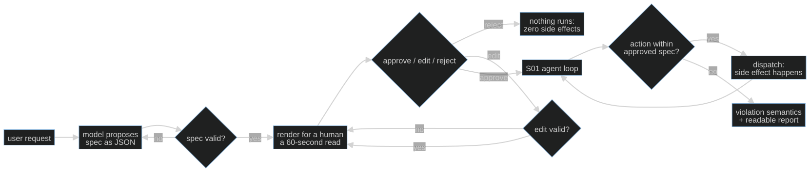

S05-consent-gate — The gate before the irreversible action
Carried in: cafe/schema.py — the ticket contract and the validator that decides whether a proposal is even readable. A ticket you can validate is a ticket a human can approve.
Today you ship: cafe/consent.py — the gate that stands between the model and the one irreversible action in the café.
What this teaches: propose → confirm → fire, with approve, edit and reject as first-class outcomes; an enforcement check that runs before dispatch on the harness's own copy of the approved ticket; and the two violation semantics, abort and degrade.
Time: 20–40 min active reading, 30–60 min notebook work, 5–10 min self-check.
These are planning estimates, not measured learner timings. Prerequisites: S01 (the loop), S04 (the ticket contract).
Hands-on: notebooks/s05_consent_gate_toy.py — runs against your model.
Video: Gemini Notebook overview — generated with Google Gemini Notebook (formerly NotebookLM); recorded against an earlier cut of this path, so it still uses the previous toy domain. Preview or review, never a substitute for the notebook.
The hook
A customer asks for a latte. The model calls propose_order, and then — without
waiting for anyone — it calls fire_ticket. A ticket is already in the kitchen
before a human has read a word. The coffee is on the pass; you cannot un-make it.
S01's loop ran whatever the model asked for. It had no concept of consent, and no amount of prompt wording changes that: the model can say anything, so the decision cannot live in the model's mouth.
The promise
By the end of this session you will have watched a rejected plan leave the world untouched, an edited plan change what actually executes, and a drifting model get stopped before dispatch — and you will be able to say which of those three is the property that matters.
The theory in depth
The proposal is data, so the check can be mechanical
A prose plan cannot be checked: there is nothing to compare a later request
against. The ticket from S04 is JSON — {"items": [...], "table": int} — so every
downstream action can be compared with the approved object field by field.
enrich_ticket attaches the data-derived fields the contract requires and never
takes a total from the model or the customer; validate_ticket reuses S04's
contract, so a ticket that fails validation never reaches a human. A customer
only ever reads a valid order.
Propose → consent → fire
consent_gate renders the ticket, asks the responder for a decision, and loops on
edits. The rendered ticket is short enough to read in seconds — that is a safety
property, not a design preference. The three outcomes are not variations on one
another:
- approve returns the approved ticket and the log records it.
- edit revalidates the payload and re-presents the amended ticket in full. An amended plan restarts the flow; no partial state carries over. A customer who walks away without answering is a rejection, the safe default.
- reject returns
None. Nothing downstream ever runs.

Reject means zero side effects, and that is a claim to test
"Nothing happens" is an assertion about the world, so it gets tested instead of
asserted in prose. The notebook's first cell drives a rejection through the gate and
then through fire_requested, and checks three things: the approved ticket is
None, state.fired is empty, and state.tool_log is empty. A rejected plan
leaves no ticket, no log entry, no order — by construction, not by good behaviour.
The gate is the check, not the dialog
check_fire(requested, approved) compares one requested ticket against the approved
one, and the request is never the authority — approved is. The model can drift, or
a customer can edit the order down to a single espresso, and the request that
fires must match what was approved. fire_requested is the only caller of
fire_ticket that this module allows, and it has two violation semantics:
- abort (the default) — return
{"action": "aborted"}and touch nothing. - degrade — fire exactly the approved ticket and log, loudly, what was refused.
Note what degrade does not do: it never fires the model's request. The approved ticket is the only ticket in the building.
The gate inside the loop
cafe/consent.py's run_shift intercepts propose_order to collect consent and
stash the approved ticket on the run; a later fire_ticket is compared against it
before anything reaches state.fired. When the gate refuses, the loop stops with
stop_reason="consent_violation" instead of pretending the turn succeeded. The
stop reason set is still the harness's: answered, script_done, turn_cap,
consent_violation — every run can say why it ended.
Build (in the notebook, predict first)
Open notebooks/s05_consent_gate_toy.py
with your endpoint already exported.
- Predict the render. A model proposes
latte + tomato toastfor table 4; the scripted customer edits it down to a singleespressoand approves. Before running: what does the customer read, and what exactly ends up in the approved ticket? Then run the cell and compare the log against your answer. - Write the enforcement point. Implement
attempt_gate(state, requested, approved): decide whether the irreversible action runs. On a violation nothing may fire — no ticket, no tool log. Return a record with at leastfiredandaction. The reference is behind a switch; flip it after your attempt. - Watch the three properties.
test_s05_reject_leaves_zero_side_effectschecks the untouched world.test_s05_edit_rebinds_what_executeschecks that the model asking for the original ticket aborts while the edited request fires.test_s05_degrade_fires_exactly_the_approved_ticketchecks that degrade fires the approved object, never the request. - Run the shift with a scripted model. A stub script walks propose → fire →
answer so you can see the whole path with the decisions visible in
gate_log. - Then your model. The same run, live. A real endpoint usually does not rush to
fire_ticket, and when it never proposes, the gate has nothing to hold. That is not a failure — it is the honest shape of the path. Watch what the model actually does and readstop_reason,approved,gate_logandfires.
Checkpoint — the number you bank
Rejected three times, live: how many runs fired nothing. The claim "reject means nothing happens" is only worth what you have tested it against, and this page will not predict your count.
Bank it as a rate with the model name, then state what it does and does not cover: it exercises the reject path on this endpoint, with this script, and it says nothing yet about a model that proposes something nobody approved. That is the loop-level case the drift assertion covers.
State of the art (as of August 2026)
| Development | Status | Take |
|---|---|---|
| OpenAI Agents SDK | recognize | Owns the loop and offers tool-level approval flows, so a human can interrupt before a sensitive call. The same design question: who holds the approved object. |
| Anthropic tool use | recognize | A tool call is a request, not an execution. Every consent design starts from that fact, which S01 established the hard way. |
| OWASP Top 10 for LLM Applications | recognize | Names excessive agency as a risk class and treats human approval as the control. Read it as a checklist for what your gate does not yet cover. |
| Model Context Protocol | recognize | Standardises tool discovery and deliberately leaves approval to the host. The gate you wrote is that host's job. |
| LangGraph | adopt | Models human-in-the-loop as interrupts with durable state, so an approval can resume a paused graph. Read it when you need the gate to survive a restart. |
Annotated readings
- OWASP Top 10 for LLM Applications, excessive agency — extract: the listed mitigations and mark which ones this session implements and which ones it hands to S06.
- OpenAI Agents SDK, human approval for tools — extract: what the SDK pauses,
what it preserves across the pause, and how it decides which tools are sensitive.
Compare it with your single
IRREVERSIBLE_ACTIONname. cafe/consent.py,check_fireandfire_requested— read them in that order. The comparison is small on purpose; the point is where it runs, not how clever it is.
Misconceptions and failure modes
- "The prompt can ask the model to confirm before firing." Asking is not enforcing. The model can say anything; the gate is a check on the harness's own copy of the approved ticket.
- "Reject just means the model stops." Reject returns
Noneand nothing downstream runs. It is a state, not a message. - "Degrade is a softer abort." Degrade fires exactly the approved ticket. It is the product decision to serve what the human agreed to while logging the refusal — never to serve the model's request.
- "An edit only updates the fields that changed." An edit re-renders the whole ticket and restarts the flow. Partial state is how a customer approves one thing and gets another.
- "The model proposed it, so it is obviously what the customer wants." The proposal is unvalidated until the gate validates it, and unauthorised until a human approves it. Both checks run before dispatch.
Self-check
Why must fire_requested compare against the approved ticket rather than the model's request?
Because the request is the thing under suspicion. The approved object is the only
record of what a human agreed to; if the model drifts, or a customer edits the
order down, the request will disagree with it. The check exists to catch exactly
that disagreement before dispatch.What exactly does "reject leaves zero side effects" mean, and how is it tested?
No fired ticket and no tool-log entry, plus an approved ticket of `None`. The cell drives a rejection through the gate and the enforcement point and asserts all three. It is a claim about the world, so it is tested, not described.Under degrade, which ticket reaches the kitchen when the model asks for something else?
The approved ticket, always. Degrade fires the approved object and records the
clauses it refused. Firing the model's request — even partially — would make the
gate decorative.A live run never calls fire_ticket. Did the gate fail?
No. The gate only acts on what it is given. A model that answers in prose instead
of firing leaves the gate with nothing to hold, which is the honest shape of the
path. Read `stop_reason` and `gate_log` before calling it a success or a failure.What this unlocks
You can now hold an irreversible action behind a check that runs before dispatch. But the gate only sees what it is given: an untrusted message still flows straight into the model. S06 — Layered detection puts an ordered pipeline in front of the model — a deterministic keyword floor before any model call, an allergen classifier, and a scope governor — with a real allergen as the stake.